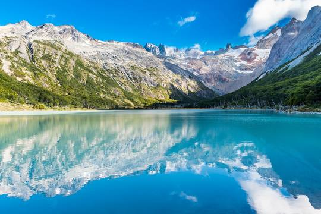
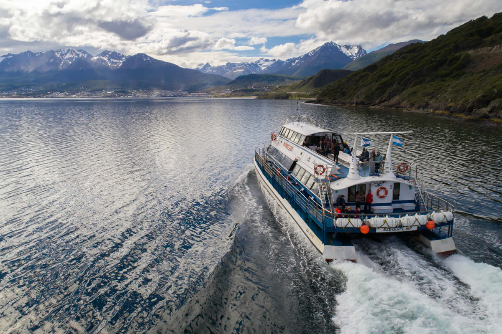
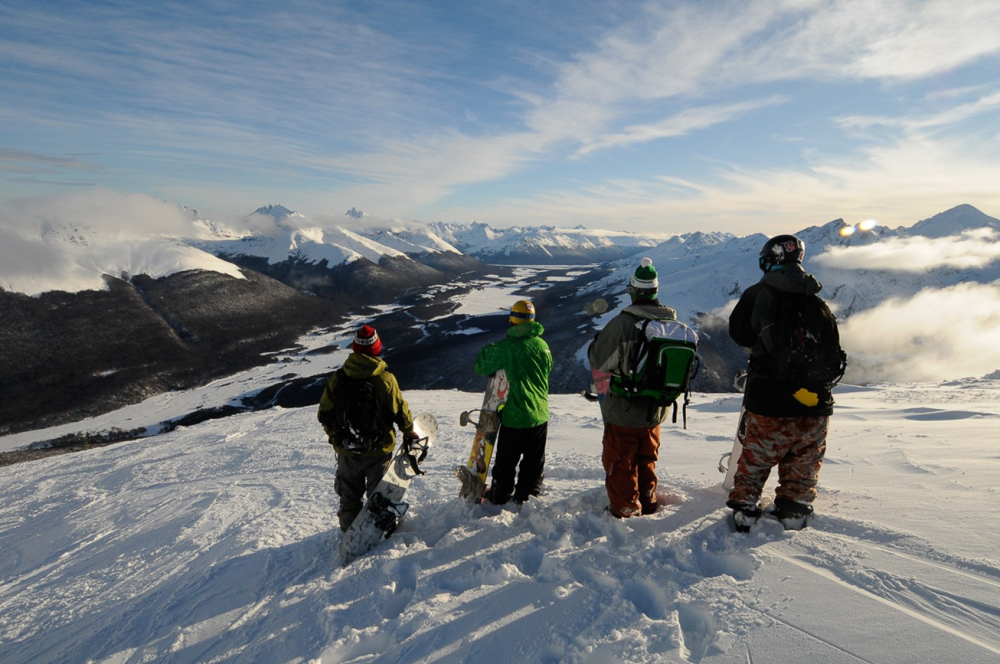
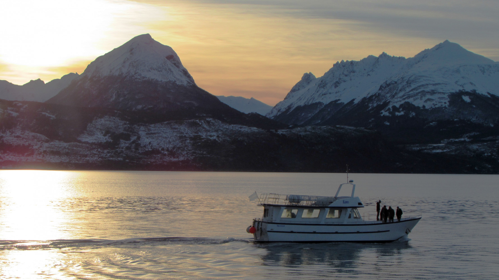

La ciudad más al sur del mundo se encuentra en el Canal Beagle, entre la cadena montañosa Martial y el fin del mundo. Es un punto de acceso clave para el esquí en el Cerro Castor y Glaciar Martial, las aventuras en la vida salvaje con pingüinos y orcas en el Canal Beagle, y el Parque Nacional Tierra del Fuego. Por supuesto, también es la parada obligada más cercana de la Antártida, un destino único para hacer kayak, navegar o disfrutar de un trago en el bar cálido de un hotel.


Sobre Ushuaia
Ubicada a orillas del Canal Beagle y rodeada por la cadena montañosa Martial, ofrece un paisaje único en la Argentina, con la combinación de montañas, mar, glaciares y bosques.
La temperatura media de verano es de 10ºC, con máximas que pueden llegar a los 20ª, con luz solar desde las tres de la mañana hasta aproximadamente las veintitrés horas. En invierno, la temperatura media es de 1ºC, con mínimas que pueden llegar a -10ºC, permitiendo disfrutar de actividades de nieve en la ciudad, como patinaje sobre hielo en la laguna natural, conocida como “Laguna del Diablo”, o esquí de fondo o alpino, en cercanías del Glaciar Martial, en Cerro Castor o en los Centros Invernales ubicados sobre la Ruta 3.


Bienvenidos a Ushuaia
Dueña de un paisaje único, Ushuaia ofrece un sinfín de posibilidades y actividades, en verano, trekking, cabalgatas, pesca deportiva y mountain bike permitiendo al visitante disfrutar de la naturaleza y recorrer lugares inexplorados por escenarios tan increíbles como el Parque Nacional Tierra del Fuego.
En invierno, la magnífica geografía y las temperaturas frías invitan a practicar esquí, tanto alpino (en descenso) y de fondo (en terreno llano). Navegar el Canal Beagle es otra experiencia imperdible ya que este fue escenario de las proezas de aquellos primeros colonizadores y es morada de la fauna marina característica de la región.
Para disfrutar la estadía en Ushuaia, sugerimos contar siempre con al menos un abrigo impermeable, y calzado cómodo para desplazarse con comodidad y seguridad, por las calles con pendiente, características de esta ciudad.
En cuanto a servicios turísticos, la ciudad cuenta con alojamientos y restaurantes de todas las categorías como así también bancos, casas de cambios y todas las comodidades que el turista necesita.

Historia de Ushuaia
La historia de Ushuaia empezó a esbozarse con la llegada, en 1869, del misionero anglicano Stirling, quien se dedicó a evangelizar a los nativos. Pero sin lugar a dudas fue la decisión del presidente Roca de instalar una colonia penal en la región lo que ayudó al desarrollo y al crecimiento de Ushuaia.